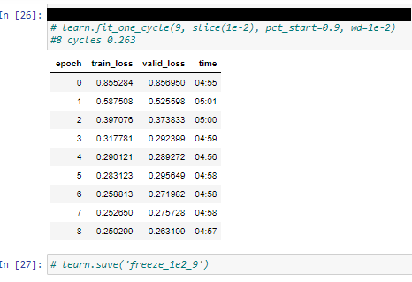
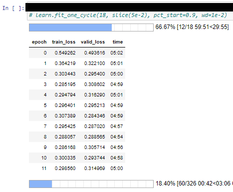
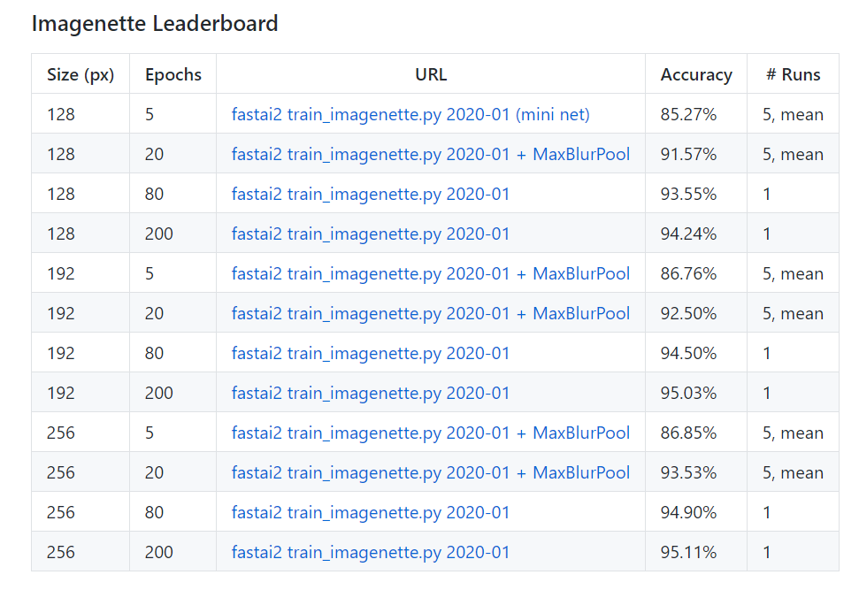
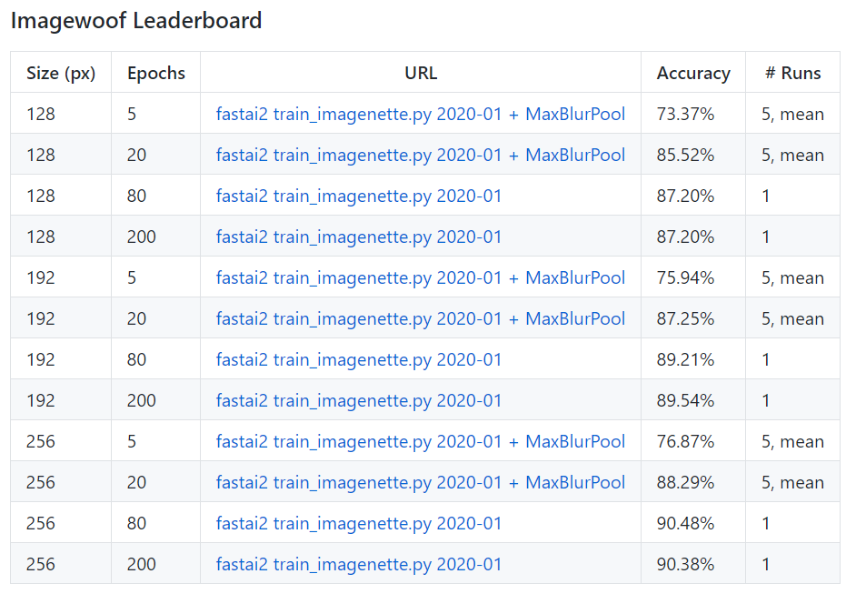

<!doctype html>
<html lang="en">
    <head>
        <meta charset="utf-8">
        <meta name="viewport" content="width=device-width, initial-scale=1.0, maximum-scale=1.0, user-scalable=no">

        <title>Finding State of the Art Techniques through Open Competitions</title>
        <link rel="stylesheet" href="./css/reveal.css">
        <link rel="stylesheet" href="./css/theme/moon.css" id="theme">
        <link rel="stylesheet" href="./css/highlight/zenburn.css">
        <link rel="stylesheet" href="./css/print/paper.css" type="text/css" media="print">


    </head>
    <body>

        <div class="reveal">
            <div class="slides"><section  data-markdown><script type="text/template">
## Intro

Scott Mueller

###### smueller.tampa.ai@gmail.com
</script></section><section  data-markdown><script type="text/template">## Tampa.ai

Looking for Presenters
</script></section><section  data-markdown><script type="text/template">## Finding State of the Art Techniques through Open Competitions

https://meanderingstream.github.io/competitions_state_of_art</script></section><section  data-markdown><script type="text/template">## A disciplined approach to neural network hyper-parameters: Part 1 – learning rate, batch size, momentum, and weight decay

https://arxiv.org/abs/1803.09820
</script></section><section  data-markdown><script type="text/template">## Remembering Lessons Learned

* Super Convergence
* Unreasonable Effectiveness of Validation/Test Loss

*High Learning Rate -> Regulator*
</script></section><section  data-markdown><script type="text/template">## High Learning Rate


</script></section><section  data-markdown><script type="text/template">## Difference In Model Performance Seen Early


</script></section><section  data-markdown><script type="text/template">## Example of How Learning Rate Makes Difference



</script></section><section  data-markdown><script type="text/template">## Competition With Unusual Criteria

* Accessible - Commercial single GPU Computers

* Difficult Problem but Low Nbr Images

* Best in X Epoch

* Publish How - Repeatability
</script></section><section  data-markdown><script type="text/template">## Epoch Constrained

* 5, 20, 80, 200

*Learn From Random Weights*

https://github.com/fastai/imagenette</script></section><section  data-markdown><script type="text/template">## Researchers Did Too Well

* Let's make it harder

* 70/30 train/valid
- older had smaller validation set
</script></section><section  data-markdown><script type="text/template">## Imagenette

* 10 Easy to Classify Images

* tench, English springer, cassette player, chain saw, church, French horn, garbage truck, gas pump, golf ball, parachute

* Pulled from Imagenet</script></section><section  data-markdown><script type="text/template">## Imagenette Leaderboard


</script></section><section  data-markdown><script type="text/template">## Imagewoof

* 10 Not so Easy to Classify Images

* Australian terrier, Border terrier, Samoyed, Beagle, Shih-Tzu, English foxhound, Rhodesian ridgeback, Dingo, Golden retriever, Old English sheepdog

* Pulled from Imagenet</script></section><section  data-markdown><script type="text/template">## Imagewoof Leaderboard


</script></section><section  data-markdown><script type="text/template">## Example Notebook

https://github.com/muellerzr/Practical-Deep-Learning-For-Coders/blob/master/02b_SOTA.ipynb

[SOTA](./nbs/Practical-Deep-Learning-For-Coders_02b_SOTA.ipynb.pdf)
</script></section><section  data-markdown><script type="text/template">## Imagewang

* Imagenette and Imagewoof

* Twist: Make into Semi-supervised problem

* Validation is same as Imagewoof - No Imagenette

* Only 10% of Imagewoof are in training set</script></section><section  data-markdown><script type="text/template">## Imagewang Leaderboard

* Beginning of competition, no leaderboard

https://www.fast.ai/2020/01/13/self_supervised/

[Self Supervised](./nbs/Selfsupervised_fastai.pdf)
</script></section><section  data-markdown><script type="text/template">Questions?
</script></section><section  data-markdown><script type="text/template">
[KnowFalls.com](https://www.KnowFalls.com/)

Fall Prevention Focus

###### scottmueller@knowfalls.com
</script></section></div>
        </div>

        <script src="./lib/js/head.min.js"></script>
        <script src="./js/reveal.js"></script>

        <script>
            function extend() {
              var target = {};
              for (var i = 0; i < arguments.length; i++) {
                var source = arguments[i];
                for (var key in source) {
                  if (source.hasOwnProperty(key)) {
                    target[key] = source[key];
                  }
                }
              }
              return target;
            }

            // Optional libraries used to extend on reveal.js
            var deps = [
              { src: './lib/js/classList.js', condition: function() { return !document.body.classList; } },
              { src: './plugin/markdown/marked.js', condition: function() { return !!document.querySelector('[data-markdown]'); } },
              { src: './plugin/markdown/markdown.js', condition: function() { return !!document.querySelector('[data-markdown]'); } },
              { src: './plugin/highlight/highlight.js', async: true, callback: function() { hljs.initHighlightingOnLoad(); } },
              { src: './plugin/zoom-js/zoom.js', async: true },
              { src: './plugin/notes/notes.js', async: true },
              { src: './plugin/math/math.js', async: true }
            ];

            // default options to init reveal.js
            var defaultOptions = {
              controls: true,
              progress: true,
              history: true,
              center: true,
              transition: 'default', // none/fade/slide/convex/concave/zoom
              dependencies: deps
            };

            // options from URL query string
            var queryOptions = Reveal.getQueryHash() || {};

            var options = {"transition":"fade"};
            options = extend(defaultOptions, options, queryOptions);
        </script>


        <script>
          Reveal.initialize(options);
        </script>
    </body>
</html>
